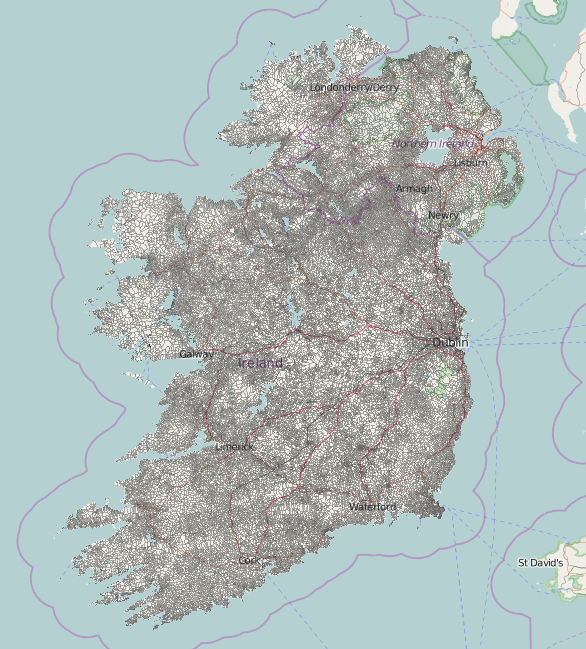

Mapping Ireland's 61,000 administrative boundaries
The really, REALLY long way from Abartagh to Youngstown
Created by Rory McCann www.technomancy.org & Dave Corley @DaCor_ie
Townlands
Lowest level of Ireland's adminitrative boundary
admin_level=10
Very old - Date back about 1,000 years
Very small - Traditionally the amount of land one extended family could live off.
Why?
Addresses
Anyone geocoded Irish addresses? It's a mess.
Houses in rural Ireland don't have house numbers, instead using (sometimes) "House Name, Townland, Nearby Town, County"
Townlands are important for geocoding many addresses.
Newly introduced postcode system (Eircode) might change that
Why?
Other administrative boundaries
Townlands are atomic unit of other administrative boundaries
Larger administrative boundaries are made up of townlands.
Electoral Divisions (NUTS LAU), Constituancies
Can now add those to OSM
Can now use Irish official government data which is keyed on ED
Why?
History and Heritage
Part of Ireland's cultural heritage and should be preserved and spread.
19th century census records are sorted by townlands.
Helps people searching for Irish ancestry/geneology
Open Data
Can't we import some open data from the government?
No. Not available, incompatible licence or simplified
NI gov released townland data days after OSM had completed NI
So how do we do it?
Tracing!
Most maps now a days don't show townland borders
Or other borders. Only counties (admin_level=6)
Tax authorities to the rescue!
19th Century British tax authorities
Ordnance Survey - First edition
From 1829-42 the Ordnance Survey mapped Ireland for tax purposes
Made some beautiful Six Inch to a Mile (1:10,5600) maps ("First Edition")
Clearly show townland borders
Copyright has expired!
Historically tidbit: Population of Ireland has halved since then.
Nice easy to read maps
Problems: Only a few libraries and universities physically have the ~2,000 sheets
Ordnance Survey Ireland have a copy
Scanned in!
Cropped and rectified!
But
Claim copyright ☹
Need another source
Third Edition of 1:10,560 published in ~1910
1922 - Irish gets independence from the UK
1939 - WW2 starts
1940 - UK war office, thinking they might need maps of Ireland, fall back to the 3rd Ed.
Rescale 3rd Ed to produce GSGS 3906 maps
Glucksman Map Library, Trinity College, Dublin
Glucksman Map Library, in Trinity College, Dublin had a scan
We will rectify and crop it, if we can scan it
Success!
Let's get rectifying
Upload the images to Map Warper (mapwarper.net)
About ~675 images
Community starts cropping, rectifying and mapping.
Quality 😕
Can you spot the townland borders?
Quality 😕
Can you spot the townland borders?
Let's get mapping
OK, it's hard, but let's do it
Some things to make it easier
We made some tools to help
JOSM preset and map paint style
Slippy map
townlands.ie
Documentation
maps.openstreetmap.org - Slippy map
We set up a replicating slippy map tile server which shows the mapped townlands (etc).
Allows people to see how it's being done
townlands.ie
Rory set up townlands.ie
Django web app that imports OSM data and displays OSM data
Includes progress reports and rates of mapping, to spur people on.
YouTube videos
Dave made video tutorial on mapping townlands
Covers all aspects of georectifying a sheet, using JOSM, mapping the townland, and other areas
Led to some new mappers coming out the woodwork and contributing
Map all the boundaries
While adding townlands, we can now start adding higher level administrative boundaries
Civil Parishes
Based on Church of Ireland (Anglican) parishes
Not used much any more
Very useful for geneology, since old census, birth certs etc are often "keyed" against CP
boundary=civil_parish
Baronies
Each county is split into a few baronies
Not used much anymore, nor used a lot historically
boundary=barony
Electoral Divisions
admin_level=9
Constitutancies (which are often changed) are legally defined by EDs (mostly)
Official statistics (Census) use EDs
EU level statistics area (NUTS / LAU)
Some stats
There are 60,513 townlands
First townland added in 27th June 2010
Last added 25th August 2016
Mapped townlands
One problem

Since townlands are small, there are now tens of thousands of tiny relations all over Ireland
Lessons
Seemed impossible in 2010
But we did it!
Most mapping done by small number of people
But you have to get out there and tell people, in order to find the long tail mappers
The Future - What next?
Can utilize government's open data (EDs)
Map more accurately - Dramatically improved county borders